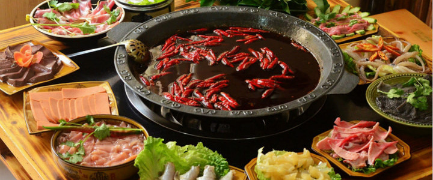
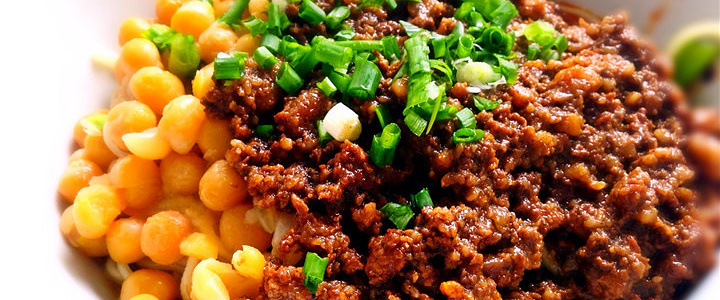
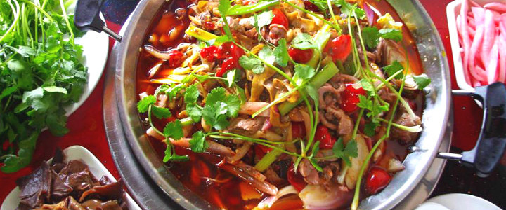
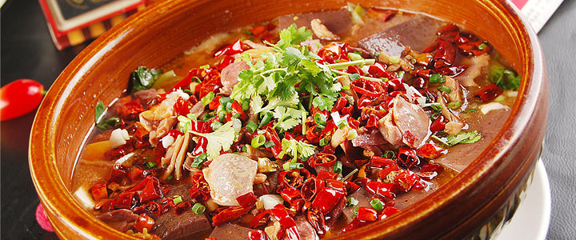
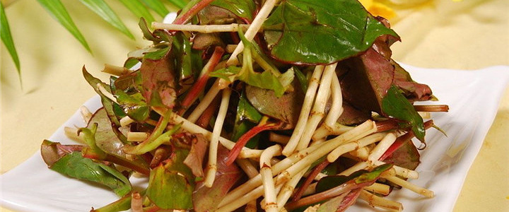

重庆火锅收藏

重庆火锅是重庆十大文化符号之首，起源于明末清初，船工为驱寒发明的，后红遍大江南北，成为当地人一年四季吃不腻的美食。与四川火锅不同，讲究六分牛油四分水，重麻重辣，是食客们的心头好。
重庆小面

小面是重庆市民唯一能普遍接受的面食。狭义小面指麻辣素面，在重庆，即使加入豪华浇头的面条也称作小面。小面有红汤清汤之分，有汤面干馏之别；面条选用劲道爽滑的碱水面，油重、麻辣味足。
黔江鸡杂

重庆的黔江鸡杂脆嫩鲜香，与泡椒姜蒜同炒，加之滚烫的红油，配上酸爽的萝卜丝，乍一眼就让人食欲大增，垂涎不已。黔江鸡杂经过几十年的发展创新，在做法上沿用传统以保正宗，在锅里只能加油不能加水；保证熬制过程中锅里只能有泡菜和鸡杂，保证味觉上鲜美纯正。说到重庆的泡椒鸡杂，千年古镇磁器口的泡椒鸡杂是一绝，原本腥膻的鸡杂经过炒料的炖煮，鲜辣美味，香气四溢，鸡杂脆嫩而不老，辣得过瘾，不可不尝。
毛血旺

毛有粗狂的意思，又代表毛肚百叶等，血旺是血豆腐。将生血旺现烫现吃，于是得名毛血旺。重庆多用鸭血，汤汁红亮，麻辣烫嫩鲜，味浓味厚。主要食材有鳝鱼片、毛肚、鱿鱼、肥肠、午餐肉等。
凉拌折耳根

折耳根学名鱼腥草的植物，中医入药，重庆人拿来当凉菜吃，并且爱之如命。跟四川不同的是，重庆凉拌折耳根既吃茎干，也吃叶子，一般一古脑整株植物都入口下肚，伴上红油、辣椒、花椒、白糖、香醋，爱的就是这股不羁的鱼腥味。